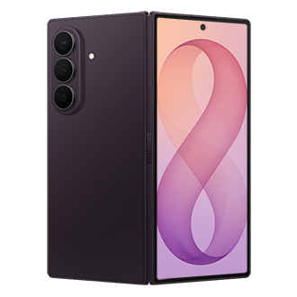

02 / Melhores do ano
Galaxy Z Fold8 Ultra
Consultar uma passagem enquanto se escreve uma mensagem é uma pequena tarefa que explica um dobrável melhor que uma longa ficha técnica. O Fold8 Ultra abre uma tela de 8 polegadas para dividir o trabalho entre aplicativos. A tela externa fica para as respostas que não pedem tanto espaço.
- Área de trabalho
- Tela interna de 8”
- Uso cotidiano
- Tela externa
- Câmera principal
- 200 MP
- Fotos mais abertas
- Ultrawide de 50 MP
Na práticaO formato recompensa quem realmente usa duas coisas ao mesmo tempo. Abrir um tablet a cada notificação não precisa virar obrigação.
Antes de escolher · ficha e fontes
A proteção IP48 não significa vedação completa contra poeira fina. Considere o preço e o cuidado exigido pelo formato dobrável.